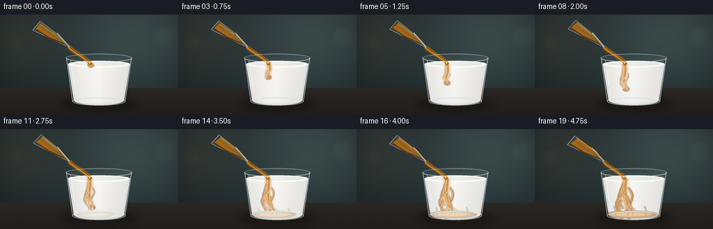
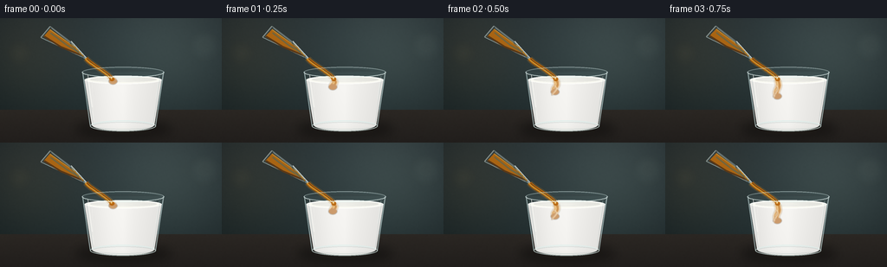

CODING AGENTS AS PIXEL WORLD MODELS
traex/GPT-5.6-Sol · phygen_137
点击播放 · 原生 RGB 像素
逐轮保存的候选
回放视频、检查图与代码变化。
每份候选均可单独播放。实际图片检查记录在下方工具轨迹中。
候选 01播放与检查图
点击播放 · 原生 RGB 像素


展开代码变化
--- 上一保存版本
+++ 本次保存版本
@@ -0,0 +1,287 @@
+from pathlib import Path
+import math
+import numpy as np
+from PIL import Image, ImageDraw, ImageFilter
+import artifact_io
+
+# Procedural, text-only rendering of honey being poured into milk.
+W, H, N, SS = 256, 144, 20, 4
+RW, RH = W * SS, H * SS
+rng = np.random.default_rng(137)
+
+
+def P(pt):
+ return tuple(int(round(v * SS)) for v in pt)
+
+
+def poly(draw, pts, **kw):
+ draw.polygon([P(p) for p in pts], **kw)
+
+
+def ellipse(draw, box, **kw):
+ draw.ellipse(P(box[:2]) + P(box[2:]), **kw)
+
+
+def line(draw, pts, fill, width, joint='curve'):
+ draw.line([P(p) for p in pts], fill=fill, width=max(1, int(width * SS)), joint=joint)
+
+
+def bezier(p0, p1, p2, p3, steps=40):
+ out = []
+ for t in np.linspace(0, 1, steps):
+ q = 1-t
+ out.append((q**3*p0[0]+3*q*q*t*p1[0]+3*q*t*t*p2[0]+t**3*p3[0],
+ q**3*p0[1]+3*q*q*t*p1[1]+3*q*t*t*p2[1]+t**3*p3[1]))
+ return out
+
+
+def rgba_layer():
+ return Image.new('RGBA', (RW, RH), (0, 0, 0, 0))
+
+
+def compose(base, layer):
+ return Image.alpha_composite(base, layer)
+
+# Static softly textured kitchen backdrop, built analytically.
+yy, xx = np.mgrid[0:RH, 0:RW]
+x = xx / SS
+ny = yy / SS
+wall = np.zeros((RH, RW, 3), dtype=np.float32)
+# charcoal blue-green wall with a warm patch at left and cool light at right
+wall[:, :, 0] = 25 + 13*(1-ny/H) + 8*(x/W)
+wall[:, :, 1] = 37 + 12*(1-ny/H) + 8*(x/W)
+wall[:, :, 2] = 39 + 14*(1-ny/H) + 8*(x/W)
+rad = np.exp(-((x-194)**2/(2*60**2) + (ny-34)**2/(2*55**2)))
+wall += rad[..., None] * np.array([21, 24, 21])
+rad2 = np.exp(-((x-28)**2/(2*44**2) + (ny-38)**2/(2*48**2)))
+wall += rad2[..., None] * np.array([15, 10, 3])
+# dark vignette
+vig = 1 - .25*np.clip(((x-W/2)/(W*.72))**2 + ((ny-H/2)/(H*.85))**2, 0, 1)
+wall *= vig[..., None]
+# counter from y=107
+counter = ny >= 106
+cg = np.clip((ny-106)/38, 0, 1)
+wall[counter, 0] = (43 - 10*cg)[counter]
+wall[counter, 1] = (39 - 9*cg)[counter]
+wall[counter, 2] = (35 - 7*cg)[counter]
+# low-amplitude fixed texture
+small_noise = rng.normal(0, 1.0, (H, W)).astype(np.float32)
+noise_img = Image.fromarray(np.uint8(np.clip(128 + small_noise*18, 0, 255))).resize((RW, RH), Image.Resampling.BICUBIC).filter(ImageFilter.GaussianBlur(SS*0.5))
+noise = (np.asarray(noise_img).astype(np.float32)-128)/18
+wall += noise[..., None]*0.65
+wall = np.uint8(np.clip(wall, 0, 255))
+base_static = Image.fromarray(wall, 'RGB').convert('RGBA')
+# Defocused practical lights and counter seam
+bokeh = rgba_layer(); bd = ImageDraw.Draw(bokeh, 'RGBA')
+ellipse(bd, (218, 14, 254, 51), fill=(137, 157, 144, 11))
+ellipse(bd, (225, 20, 246, 42), fill=(190, 205, 183, 12))
+ellipse(bd, (9, 27, 36, 54), fill=(190, 150, 91, 10))
+line(bd, [(0,106),(256,106)], (164,145,122,28), .7)
+bokeh = bokeh.filter(ImageFilter.GaussianBlur(5*SS))
+base_static = compose(base_static, bokeh)
+
+# main glass interior mask (slightly tapered tumbler)
+interior_mask = Image.new('L', (RW, RH), 0)
+imd = ImageDraw.Draw(interior_mask)
+poly(imd, [(96.5,61),(187.5,61),(178.5,125),(105.5,125)], fill=255)
+ellipse(imd, (105.5,117,178.5,130), fill=255)
+# Restrict liquid lower than surface while retaining curved surface ellipse.
+liquid_mask = Image.new('L', (RW, RH), 0)
+lmd = ImageDraw.Draw(liquid_mask)
+poly(lmd, [(97.5,71),(186.5,71),(178,124),(106,124)], fill=255)
+ellipse(lmd, (106,117,178,130), fill=255)
+ellipse(lmd, (97.5,66.5,186.5,76), fill=255)
+
+# Ground shadow shared by all frames.
+shadow = rgba_layer(); sd = ImageDraw.Draw(shadow, 'RGBA')
+ellipse(sd, (87,119,198,138), fill=(0,0,0,115))
+ellipse(sd, (99,123,187,135), fill=(9,7,4,100))
+shadow = shadow.filter(ImageFilter.GaussianBlur(6*SS))
+
+
+def draw_source_glass(frame):
+ """Tilted clear tumbler. Geometry subtly rocks as its honey level drops."""
+ layer = rgba_layer()
+ d = ImageDraw.Draw(layer, 'RGBA')
+ # tiny controlled hand-like motion around pouring lip
+ a = math.radians(-1.3 + 2.0*math.sin(frame*.17))
+ pivot = np.array([100.0, 47.0])
+ def tr(p):
+ q = np.array(p, float)-pivot
+ c,s = math.cos(a),math.sin(a)
+ return tuple((np.array([[c,-s],[s,c]])@q+pivot + np.array([0,.22*math.sin(frame*.4)])).tolist())
+ # outer vessel: mouth low/high, sides, base
+ vessel = [tr((99.5,47)), tr((82.0,27.0)), tr((58.5,8.5)), tr((47.5,21.0))]
+ poly(d, vessel, fill=(180,211,210,16))
+ # rear rim and glass body haze
+ line(d, [tr((99.5,47)),tr((82,27))], (217,237,233,135), 1.25)
+ line(d, [tr((82,27)),tr((58.5,8.5))], (210,232,229,82), 1.15)
+ line(d, [tr((47.5,21)),tr((99.5,47))], (220,239,234,125), 1.2)
+ line(d, [tr((58.5,8.5)),tr((47.5,21))], (225,241,235,120), 1.3)
+ # honey remaining, clinging to lower wall. It recedes slowly but stays visibly a glass of honey.
+ recede = frame/19
+ honey_pts = [tr((96.3,43.9)), tr((86.7+2.1*recede,32.8-1.7*recede)),
+ tr((58.6+3.8*recede,11.6)), tr((50.8,20.2)), tr((70.2,32.7))]
+ poly(d, honey_pts, fill=(186,106,14,224))
+ # darker depth along lower edge and luminous honey surface
+ line(d, [tr((51.5,20)),tr((70.3,32.2)),tr((96,43.6))], (116,57,4,155), 2.2)
+ line(d, [tr((58.5+3.7*recede,12.2)),tr((86.7+2.0*recede,33)),tr((96,43.8))], (244,168,43,175), 1.0)
+ # internal golden glow
+ line(d, [tr((59,16)),tr((78,31)),tr((91,39))], (255,205,85,80), 2.0)
+ # thick clear rim: doubled lines give refraction
+ line(d, [tr((100.2,46.4)),tr((82.4,26.1))], (241,250,245,195), 1.0)
+ line(d, [tr((98.0,48.0)),tr((80.8,28.0))], (126,163,163,90), .7)
+ # glass highlight on upper side
+ line(d, [tr((81.4,27.7)),tr((60.2,10.7))], (247,255,251,125), .65)
+ return layer, tr((99.2,46.4))
+
+
+def make_milk():
+ # Subtle vertical milk shading, opaque but not flat.
+ arr = np.zeros((RH, RW, 4), dtype=np.uint8)
+ ygrid, xgrid = np.mgrid[0:RH,0:RW]
+ xf=xgrid/SS; yf=ygrid/SS
+ edge = np.clip(np.abs(xf-142)/48,0,1)
+ shade = 241 - 18*edge + 5*np.exp(-((xf-127)/19)**2) - 5*np.clip((yf-70)/60,0,1)
+ arr[...,0] = np.clip(shade+4,0,255)
+ arr[...,1] = np.clip(shade+3,0,255)
+ arr[...,2] = np.clip(shade,0,255)
+ arr[...,3] = np.asarray(liquid_mask)
+ milk = Image.fromarray(arr,'RGBA')
+ # soft milk surface and left reflection
+ lay=rgba_layer(); d=ImageDraw.Draw(lay,'RGBA')
+ ellipse(d,(98,66.4,186.5,76.2),fill=(250,250,242,238),outline=(255,255,252,210),width=SS)
+ ellipse(d,(104,68.2,181,73.8),fill=(218,220,207,70))
+ line(d,[(106,74),(108,118)],(255,255,250,35),1)
+ return compose(milk,lay)
+
+milk_base = make_milk()
+
+
+def honey_plume(frame):
+ """Dense honey sinks into milk: a narrow filament, then folded tendrils and bottom pool."""
+ p = frame/19.0
+ lay = rgba_layer(); d=ImageDraw.Draw(lay,'RGBA')
+ # advancing central viscous finger, quickly crossing surface then slowly sinking
+ tip = 72 + 52*(1-math.exp(-2.55*p))
+ x0 = 129.0 + 0.7*math.sin(frame*.45)
+ center=[]
+ for yv in np.linspace(71.5,tip,max(4,int((tip-71)*1.4))):
+ q=(yv-71.5)/max(tip-71.5,1)
+ xv=x0 + 3.4*math.sin(q*5.1+frame*.18)*q + 1.5*q*q
+ center.append((xv,yv))
+ if len(center)>1:
+ # translucent diffusion halo, then dense core
+ line(d,center,(215,134,31,62),8.5+2*p)
+ line(d,center,(188,103,10,178),4.8+1.4*p)
+ line(d,[(x-1.1,y) for x,y in center],(246,177,54,115),1.1)
+ ellipse(d,(center[-1][0]-4.8,tip-2.5,center[-1][0]+5.0,tip+4.5),fill=(173,88,7,145))
+ # Side folds appear as the honey ropes buckle and spread in the milk.
+ for k in range(5):
+ born=.10+k*.10
+ q=np.clip((p-born)/(1-born),0,1)
+ if q<=0: continue
+ start_y=78+k*6.0
+ length=11+24*q
+ side=-1 if k%2==0 else 1
+ pts=[]
+ for u in np.linspace(0,1,25):
+ yv=start_y+length*u
+ xv=x0+side*(2.0+8.0*q*math.sin(math.pi*u)) + 2.3*math.sin(u*4.8+k)
+ pts.append((xv,yv))
+ line(d,pts,(174,91,7,int(118+50*q)),2.0+2.2*q)
+ line(d,[(x-side*.8,y) for x,y in pts],(239,157,39,int(70+35*q)),.75)
+ ex,ey=pts[-1]
+ ellipse(d,(ex-3.1*q,ey-1.7,ex+3.1*q,ey+2.2),fill=(166,83,5,int(100*q)))
+ # Honey reaches and pools along the bottom, remaining marbled rather than instantaneously mixing.
+ poolq=np.clip((p-.48)/.52,0,1)
+ if poolq>0:
+ ellipse(d,(112-13*poolq,117.5,160+18*poolq,128.2),fill=(170,86,7,int(120*poolq)))
+ ellipse(d,(116-8*poolq,119.5,154+14*poolq,125.8),fill=(228,143,26,int(100*poolq)))
+ for k in range(4):
+ bx=116+k*14+4*math.sin(k*2.2)
+ line(d,[(bx,125),(bx+3*math.sin(k),119-3*poolq),(bx-2,116-5*poolq)],
+ (157,77,5,int(90*poolq)),1.2+1.3*poolq)
+ # blur only the diffuse underlayer a little; dense forms stay readable
+ blurred=lay.filter(ImageFilter.GaussianBlur(.48*SS))
+ # clip to the liquid volume
+ clipped=rgba_layer(); clipped.paste(blurred,(0,0),Image.composite(blurred,rgba_layer(),liquid_mask))
+ # PIL paste mask above is awkwardly alpha-weighted; explicit alpha intersection is robust.
+ ar=np.array(blurred)
+ ar[...,3]=(ar[...,3].astype(np.uint16)*np.asarray(liquid_mask).astype(np.uint16)//255).astype(np.uint8)
+ return Image.fromarray(ar,'RGBA')
+
+
+def stream_layer(frame, lip):
+ layer=rgba_layer(); d=ImageDraw.Draw(layer,'RGBA')
+ # Honey rope narrows under gravity and oscillates only slightly due to viscosity.
+ phase=frame*.28
+ end=(129.1+0.7*math.sin(phase),69.9)
+ curve=bezier(lip,(103+1.1*math.sin(phase),52.5),(120.5+1.0*math.sin(phase*.7),60.5),end,48)
+ # soft warm halo and dense amber body
+ line(d,curve,(221,141,31,48),7.5)
+ line(d,curve,(183,99,8,245),4.7)
+ line(d,[(x-1.15,y-.2) for x,y in curve],(250,185,58,195),1.15)
+ line(d,[(x+1.35,y+.1) for x,y in curve],(104,48,2,105),.65)
+ # coherent rounded bead where rope enters the milk
+ ellipse(d,(end[0]-2.8,end[1]-2.0,end[0]+2.8,end[1]+2.9),fill=(184,99,7,230))
+ ellipse(d,(end[0]-1.3,end[1]-1.6,end[0]+.2,end[1]+.7),fill=(255,203,88,165))
+ return layer
+
+
+def main_glass_edges(frame):
+ layer=rgba_layer(); d=ImageDraw.Draw(layer,'RGBA')
+ # back rim, partly obscured by the opaque milk
+ ellipse(d,(94.5,56.3,189.5,68.8),fill=(157,191,193,11),outline=(210,232,231,125),width=SS)
+ ellipse(d,(97,58.3,187,66.9),outline=(99,138,141,65),width=max(1,int(.65*SS)))
+ # body outline and refractive lower base
+ line(d,[(95.2,62),(104.1,124.1)],(207,231,231,145),1.25)
+ line(d,[(188.8,62),(179.5,124.1)],(212,233,232,150),1.25)
+ line(d,[(99,64),(107,121)],(83,126,130,50),.7)
+ line(d,[(185,64),(177,121)],(86,127,130,48),.7)
+ # thick glass base with doubled refraction
+ ellipse(d,(103.7,118.3,180,131.0),outline=(219,238,235,175),width=max(1,int(1.45*SS)))
+ ellipse(d,(106.5,120.2,177.6,128.5),outline=(105,145,145,75),width=max(1,int(.7*SS)))
+ # vertical specular highlights
+ line(d,[(101.3,66),(106.2,103)],(255,255,251,145),1.05)
+ line(d,[(106.6,107),(108.3,118)],(255,255,251,75),.75)
+ line(d,[(183.8,67),(179.8,93)],(241,252,248,68),.75)
+ # bright rim front arc (lower half approximated by curved polyline)
+ arc=[]
+ for a in np.linspace(0,math.pi,40):
+ arc.append((142+47.2*math.cos(a),62.5+6.1*math.sin(a)))
+ line(d,arc,(233,247,244,190),1.15)
+ # tiny moving surface ripple centered at impact
+ amp=1.7*math.exp(-frame/17)
+ for side in (-1,1):
+ pts=[]
+ for q in np.linspace(0,1,18):
+ pts.append((129+side*(4+19*q),71.0+amp*math.sin(math.pi*q)*math.cos(frame*.6)))
+ line(d,pts,(255,255,245,80),.55)
+ return layer
+
+frames=[]
+for f in range(N):
+ scene=base_static.copy()
+ scene=compose(scene,shadow)
+ # faint rear silhouette of receiving glass
+ rear=rgba_layer(); rd=ImageDraw.Draw(rear,'RGBA')
+ poly(rd,[(95,62),(189,62),(180,125),(104,125)],fill=(156,192,192,12))
+ scene=compose(scene,rear)
+ scene=compose(scene,milk_base)
+ scene=compose(scene,honey_plume(f))
+ source,lip=draw_source_glass(f)
+ scene=compose(scene,source)
+ scene=compose(scene,stream_layer(f,lip))
+ scene=compose(scene,main_glass_edges(f))
+ # subtle foreground glint and contact reflection on counter
+ fg=rgba_layer(); fd=ImageDraw.Draw(fg,'RGBA')
+ ellipse(fd,(109,128,177,134),fill=(215,181,124,8+int(8*f/19)))
+ fg=fg.filter(ImageFilter.GaussianBlur(2.2*SS))
+ scene=compose(scene,fg)
+ frame=scene.convert('RGB').resize((W,H),Image.Resampling.LANCZOS)
+ frames.append(np.asarray(frame,dtype=np.uint8))
+
+frames=np.stack(frames,axis=0)
+artifact_io.save(frames,Path(__file__).resolve().parent)
+print('saved',frames.shape,frames.dtype,'range',frames.min(),frames.max())
可观测工具轨迹
实际执行的命令与返回图片。
命令 1exit 0
/bin/bash -lc "cat prompt.txt && printf '\\n--- GENERATION_RULES.md ---\\n' && cat GENERATION_RULES.md"
命令 2exit 0
/bin/bash -lc "cat task_spec.json && printf '\\n--- FILES ---\\n' && find . -maxdepth 2 -type f -printf '%p\\n' | sort"
命令 3exit 0
/bin/bash -lc "command -v ffmpeg || true; command -v blender || true; command -v python3 || true; python3 - <<'PY' mods=['numpy','PIL','cv2','imageio','matplotlib'] for m in mods: try: x=__import__(m); print(m, getattr(x,'__version__','ok')) except Exception as e: print(m, 'MISSING',e) PY"
命令 4exit 0
/bin/bash -lc 'cat artifact_io.py'
命令 5exit 0
/bin/bash -lc "cat > generate.py <<'PY'
from pathlib import Path
import math
import numpy as np
from PIL import Image, ImageDraw, ImageFilter
import artifact_io
# Procedural, text-only rendering of honey being poured into milk.
W, H, N, SS = 256, 144, 20, 4
RW, RH = W * SS, H * SS
rng = np.random.default_rng(137)
def P(pt):
return tuple(int(round(v * SS)) for v in pt)
def poly(draw, pts, **kw):
draw.polygon([P(p) for p in pts], **kw)
def ellipse(draw, box, **kw):
draw.ellipse(P(box[:2]) + P(box[2:]), **kw)
def line(draw, pts, fill, width, joint='curve'):
draw.line([P(p) for p in pts], fill=fill, width=max(1, int(width * SS)), joint=joint)
def bezier(p0, p1, p2, p3, steps=40):
out = []
for t in np.linspace(0, 1, steps):
q = 1-t
out.append((q**3*p0[0]+3*q*q*t*p1[0]+3*q*t*t*p2[0]+t**3*p3[0],
q**3*p0[1]+3*q*q*t*p1[1]+3*q*t*t*p2[1]+t**3*p3[1]))
return out
def rgba_layer():
return Image.new('RGBA', (RW, RH), (0, 0, 0, 0))
def compose(base, layer):
return Image.alpha_composite(base, layer)
# Static softly textured kitchen backdrop, built analytically.
yy, xx = np.mgrid[0:RH, 0:RW]
x = xx / SS
ny = yy / SS
wall = np.zeros((RH, RW, 3), dtype=np.float32)
# charcoal blue-green wall with a warm patch at left and cool light at right
wall[:, :, 0] = 25 + 13*(1-ny/H) + 8*(x/W)
wall[:, :, 1] = 37 + 12*(1-ny/H) + 8*(x/W)
wall[:, :, 2] = 39 + 14*(1-ny/H) + 8*(x/W)
rad = np.exp(-((x-194)**2/(2*60**2) + (ny-34)**2/(2*55**2)))
wall += rad[..., None] * np.array([21, 24, 21])
rad2 = np.exp(-((x-28)**2/(2*44**2) + (ny-38)**2/(2*48**2)))
wall += rad2[..., None] * np.array([15, 10, 3])
# dark vignette
vig = 1 - .25*np.clip(((x-W/2)/(W*.72))**2 + ((ny-H/2)/(H*.85))**2, 0, 1)
wall *= vig[..., None]
# counter from y=107
counter = ny >= 106
cg = np.clip((ny-106)/38, 0, 1)
wall[counter, 0] = (43 - 10*cg)[counter]
wall[counter, 1] = (39 - 9*cg)[counter]
wall[counter, 2] = (35 - 7*cg)[counter]
# low-amplitude fixed texture
small_noise = rng.normal(0, 1.0, (H, W)).astype(np.float32)
noise_img = Image.fromarray(np.uint8(np.clip(128 + small_noise*18, 0, 255))).resize((RW, RH), Image.Resampling.BICUBIC).filter(ImageFilter.GaussianBlur(SS*0.5))
noise = (np.asarray(noise_img).astype(np.float32)-128)/18
wall += noise[..., None]*0.65
wall = np.uint8(np.clip(wall, 0, 255))
base_static = Image.fromarray(wall, 'RGB').convert('RGBA')
# Defocused practical lights and counter seam
bokeh = rgba_layer(); bd = ImageDraw.Draw(bokeh, 'RGBA')
ellipse(bd, (218, 14, 254, 51), fill=(137, 157, 144, 11))
ellipse(bd, (225, 20, 246, 42), fill=(190, 205, 183, 12))
ellipse(bd, (9, 27, 36, 54), fill=(190, 150, 91, 10))
line(bd, [(0,106),(256,106)], (164,145,122,28), .7)
bokeh = bokeh.filter(ImageFilter.GaussianBlur(5*SS))
base_static = compose(base_static, bokeh)
# main glass interior mask (slightly tapered tumbler)
interior_mask = Image.new('L', (RW, RH), 0)
imd = ImageDraw.Draw(interior_mask)
poly(imd, [(96.5,61),(187.5,61),(178.5,125),(105.5,125)], fill=255)
ellipse(imd, (105.5,117,178.5,130), fill=255)
# Restrict liquid lower than surface while retaining curved surface ellipse.
liquid_mask = Image.new('L', (RW, RH), 0)
lmd = ImageDraw.Draw(liquid_mask)
poly(lmd, [(97.5,71),(186.5,71),(178,124),(106,124)], fill=255)
ellipse(lmd, (106,117,178,130), fill=255)
ellipse(lmd, (97.5,66.5,186.5,76), fill=255)
# Ground shadow shared by all frames.
shadow = rgba_layer(); sd = ImageDraw.Draw(shadow, 'RGBA')
ellipse(sd, (87,119,198,138), fill=(0,0,0,115))
ellipse(sd, (99,123,187,135), fill=(9,7,4,100))
shadow = shadow.filter(ImageFilter.GaussianBlur(6*SS))
def draw_source_glass(frame):
\"\"\"Tilted clear tumbler. Geometry subtly rocks as its honey level drops.\"\"\"
layer = rgba_layer()
d = ImageDraw.Draw(layer, 'RGBA')
# tiny controlled hand-like motion around pouring lip
a = math.radians(-1.3 + 2.0*math.sin(frame*.17))
pivot = np.array([100.0, 47.0])
def tr(p):
q = np.array(p, float)-pivot
c,s = math.cos(a),math.sin(a)
return tuple((np.array([[c,-s],[s,c]])@q+pivot + np.array([0,.22*math.sin(frame*.4)])).tolist())
# outer vessel: mouth low/high, sides, base
vessel = [tr((99.5,47)), tr((82.0,27.0)), tr((58.5,8.5)), tr((47.5,21.0))]
poly(d, vessel, fill=(180,211,210,16))
# rear rim and glass body haze
line(d, [tr((99.5,47)),tr((82,27))], (217,237,233,135), 1.25)
line(d, [tr((82,27)),tr((58.5,8.5))], (210,232,229,82), 1.15)
line(d, [tr((47.5,21)),tr((99.5,47))], (220,239,234,125), 1.2)
line(d, [tr((58.5,8.5)),tr((47.5,21))], (225,241,235,120), 1.3)
# honey remaining, clinging to lower wall. It recedes slowly but stays visibly a glass of honey.
recede = frame/19
honey_pts = [tr((96.3,43.9)), tr((86.7+2.1*recede,32.8-1.7*recede)),
tr((58.6+3.8*recede,11.6)), tr((50.8,20.2)), tr((70.2,32.7))]
poly(d, honey_pts, fill=(186,106,14,224))
# darker depth along lower edge and luminous honey surface
line(d, [tr((51.5,20)),tr((70.3,32.2)),tr((96,43.6))], (116,57,4,155), 2.2)
line(d, [tr((58.5+3.7*recede,12.2)),tr((86.7+2.0*recede,33)),tr((96,43.8))], (244,168,43,175), 1.0)
# internal golden glow
line(d, [tr((59,16)),tr((78,31)),tr((91,39))], (255,205,85,80), 2.0)
# thick clear rim: doubled lines give refraction
line(d, [tr((100.2,46.4)),tr((82.4,26.1))], (241,250,245,195), 1.0)
line(d, [tr((98.0,48.0)),tr((80.8,28.0))], (126,163,163,90), .7)
# glass highlight on upper side
line(d, [tr((81.4,27.7)),tr((60.2,10.7))], (247,255,251,125), .65)
return layer, tr((99.2,46.4))
def make_milk():
# Subtle vertical milk shading, opaque but not flat.
arr = np.zeros((RH, RW, 4), dtype=np.uint8)
ygrid, xgrid = np.mgrid[0:RH,0:RW]
xf=xgrid/SS; yf=ygrid/SS
edge = np.clip(np.abs(xf-142)/48,0,1)
shade = 241 - 18*edge + 5*np.exp(-((xf-127)/19)**2) - 5*np.clip((yf-70)/60,0,1)
arr[...,0] = np.clip(shade+4,0,255)
arr[...,1] = np.clip(shade+3,0,255)
arr[...,2] = np.clip(shade,0,255)
arr[...,3] = np.asarray(liquid_mask)
milk = Image.fromarray(arr,'RGBA')
# soft milk surface and left reflection
lay=rgba_layer(); d=ImageDraw.Draw(lay,'RGBA')
ellipse(d,(98,66.4,186.5,76.2),fill=(250,250,242,238),outline=(255,255,252,210),width=SS)
ellipse(d,(104,68.2,181,73.8),fill=(218,220,207,70))
line(d,[(106,74),(108,118)],(255,255,250,35),1)
return compose(milk,lay)
milk_base = make_milk()
def honey_plume(frame):
\"\"\"Dense honey sinks into milk: a narrow filament, then folded tendrils and bottom pool.\"\"\"
p = frame/19.0
lay = rgba_layer(); d=ImageDraw.Draw(lay,'RGBA')
# advancing central viscous finger, quickly crossing surface then slowly sinking
tip = 72 + 52*(1-math.exp(-2.55*p))
x0 = 129.0 + 0.7*math.sin(frame*.45)
center=[]
for yv in np.linspace(71.5,tip,max(4,int((tip-71)*1.4))):
q=(yv-71.5)/max(tip-71.5,1)
xv=x0 + 3.4*math.sin(q*5.1+frame*.18)*q + 1.5*q*q
center.append((xv,yv))
if len(center)>1:
# translucent diffusion halo, then dense core
line(d,center,(215,134,31,62),8.5+2*p)
line(d,center,(188,103,10,178),4.8+1.4*p)
line(d,[(x-1.1,y) for x,y in center],(246,177,54,115),1.1)
ellipse(d,(center[-1][0]-4.8,tip-2.5,center[-1][0]+5.0,tip+4.5),fill=(173,88,7,145))
# Side folds appear as the honey ropes buckle and spread in the milk.
for k in range(5):
born=.10+k*.10
q=np.clip((p-born)/(1-born),0,1)
if q<=0: continue
start_y=78+k*6.0
length=11+24*q
side=-1 if k%2==0 else 1
pts=[]
for u in np.linspace(0,1,25):
yv=start_y+length*u
xv=x0+side*(2.0+8.0*q*math.sin(math.pi*u)) + 2.3*math.sin(u*4.8+k)
pts.append((xv,yv))
line(d,pts,(174,91,7,int(118+50*q)),2.0+2.2*q)
line(d,[(x-side*.8,y) for x,y in pts],(239,157,39,int(70+35*q)),.75)
ex,ey=pts[-1]
ellipse(d,(ex-3.1*q,ey-1.7,ex+3.1*q,ey+2.2),fill=(166,83,5,int(100*q)))
# Honey reaches and pools along the bottom, remaining marbled rather than instantaneously mixing.
poolq=np.clip((p-.48)/.52,0,1)
if poolq>0:
ellipse(d,(112-13*poolq,117.5,160+18*poolq,128.2),fill=(170,86,7,int(120*poolq)))
ellipse(d,(116-8*poolq,119.5,154+14*poolq,125.8),fill=(228,143,26,int(100*poolq)))
for k in range(4):
bx=116+k*14+4*math.sin(k*2.2)
line(d,[(bx,125),(bx+3*math.sin(k),119-3*poolq),(bx-2,116-5*poolq)],
(157,77,5,int(90*poolq)),1.2+1.3*poolq)
# blur only the diffuse underlayer a little; dense forms stay readable
blurred=lay.filter(ImageFilter.GaussianBlur(.48*SS))
# clip to the liquid volume
clipped=rgba_layer(); clipped.paste(blurred,(0,0),Image.composite(blurred,rgba_layer(),liquid_mask))
# PIL paste mask above is awkwardly alpha-weighted; explicit alpha intersection is robust.
ar=np.array(blurred)
ar[...,3]=(ar[...,3].astype(np.uint16)*np.asarray(liquid_mask).astype(np.uint16)//255).astype(np.uint8)
return Image.fromarray(ar,'RGBA')
def stream_layer(frame, lip):
layer=rgba_layer(); d=ImageDraw.Draw(layer,'RGBA')
# Honey rope narrows under gravity and oscillates only slightly due to viscosity.
phase=frame*.28
end=(129.1+0.7*math.sin(phase),69.9)
curve=bezier(lip,(103+1.1*math.sin(phase),52.5),(120.5+1.0*math.sin(phase*.7),60.5),end,48)
# soft warm halo and dense amber body
line(d,curve,(221,141,31,48),7.5)
line(d,curve,(183,99,8,245),4.7)
line(d,[(x-1.15,y-.2) for x,y in curve],(250,185,58,195),1.15)
line(d,[(x+1.35,y+.1) for x,y in curve],(104,48,2,105),.65)
# coherent rounded bead where rope enters the milk
ellipse(d,(end[0]-2.8,end[1]-2.0,end[0]+2.8,end[1]+2.9),fill=(184,99,7,230))
ellipse(d,(end[0]-1.3,end[1]-1.6,end[0]+.2,end[1]+.7),fill=(255,203,88,165))
return layer
def main_glass_edges(frame):
layer=rgba_layer(); d=ImageDraw.Draw(layer,'RGBA')
# back rim, partly obscured by the opaque milk
ellipse(d,(94.5,56.3,189.5,68.8),fill=(157,191,193,11),outline=(210,232,231,125),width=SS)
ellipse(d,(97,58.3,187,66.9),outline=(99,138,141,65),width=max(1,int(.65*SS)))
# body outline and refractive lower base
line(d,[(95.2,62),(104.1,124.1)],(207,231,231,145),1.25)
line(d,[(188.8,62),(179.5,124.1)],(212,233,232,150),1.25)
line(d,[(99,64),(107,121)],(83,126,130,50),.7)
line(d,[(185,64),(177,121)],(86,127,130,48),.7)
# thick glass base with doubled refraction
ellipse(d,(103.7,118.3,180,131.0),outline=(219,238,235,175),width=max(1,int(1.45*SS)))
ellipse(d,(106.5,120.2,177.6,128.5),outline=(105,145,145,75),width=max(1,int(.7*SS)))
# vertical specular highlights
line(d,[(101.3,66),(106.2,103)],(255,255,251,145),1.05)
line(d,[(106.6,107),(108.3,118)],(255,255,251,75),.75)
line(d,[(183.8,67),(179.8,93)],(241,252,248,68),.75)
# bright rim front arc (lower half approximated by curved polyline)
arc=[]
for a in np.linspace(0,math.pi,40):
arc.append((142+47.2*math.cos(a),62.5+6.1*math.sin(a)))
line(d,arc,(233,247,244,190),1.15)
# tiny moving surface ripple centered at impact
amp=1.7*math.exp(-frame/17)
for side in (-1,1):
pts=[]
for q in np.linspace(0,1,18):
pts.append((129+side*(4+19*q),71.0+amp*math.sin(math.pi*q)*math.cos(frame*.6)))
line(d,pts,(255,255,245,80),.55)
return layer
frames=[]
for f in range(N):
scene=base_static.copy()
scene=compose(scene,shadow)
# faint rear silhouette of receiving glass
rear=rgba_layer(); rd=ImageDraw.Draw(rear,'RGBA')
poly(rd,[(95,62),(189,62),(180,125),(104,125)],fill=(156,192,192,12))
scene=compose(scene,rear)
scene=compose(scene,milk_base)
scene=compose(scene,honey_plume(f))
source,lip=draw_source_glass(f)
scene=compose(scene,source)
scene=compose(scene,stream_layer(f,lip))
scene=compose(scene,main_glass_edges(f))
# subtle foreground glint and contact reflection on counter
fg=rgba_layer(); fd=ImageDraw.Draw(fg,'RGBA')
ellipse(fd,(109,128,177,134),fill=(215,181,124,8+int(8*f/19)))
fg=fg.filter(ImageFilter.GaussianBlur(2.2*SS))
scene=compose(scene,fg)
frame=scene.convert('RGB').resize((W,H),Image.Resampling.LANCZOS)
frames.append(np.asarray(frame,dtype=np.uint8))
frames=np.stack(frames,axis=0)
artifact_io.save(frames,Path(__file__).resolve().parent)
print('saved',frames.shape,frames.dtype,'range',frames.min(),frames.max())
PY
python3 generate.py"命令 6exit 0
/bin/bash -lc "python3 - <<'PY'
from pathlib import Path
import numpy as np
from PIL import Image
p=Path('.')
z=np.load('pixels.npz')['pixels']
print('packed tensor:',z.shape,z.dtype)
ims=[]
for i in range(20):
im=np.asarray(Image.open(f'frames/{i:02d}.png').convert('RGB'))
ims.append(im)
a=np.stack(ims)
print('frames:',a.shape,a.dtype,'min/max',int(a.min()),int(a.max()))
print('per-frame means:',np.round(a.mean((1,2,3)),2).tolist())
d=np.mean(np.abs(a[1:].astype(np.int16)-a[:-1].astype(np.int16)),axis=(1,2,3))
print('adjacent mean absolute deltas:',np.round(d,3).tolist())
print('all unique:',len({x.tobytes() for x in a})==20)
print('required:',{x:Path(x).stat().st_size for x in ['pixels.npz','inspection.png','transition_check.png','index.html','generate.py']})
assert a.shape==(20,144,256,3) and a.dtype==np.uint8
assert z.shape==(144,256,20)
assert np.all(d>0.01)
PY"命令 7exit 0
/bin/bash -lc 'git status --short 2>/dev/null || true; find frames -maxdepth 1 -type f | sort | wc -l; du -h pixels.npz index.html inspection.png'
命令 8exit 0
/bin/bash -lc 'before=$(sha256sum pixels.npz | cut -d'"' ' -f1); python3 generate.py >/tmp/pixelworld_regen.log 2>&1; after="'$(sha256sum pixels.npz | cut -d'"' ' -f1); cat /tmp/pixelworld_regen.log; echo \"sha256 before="'$before"; echo "sha256 after =$after"; test "$before" = "$after" && echo '"'deterministic regeneration: PASS'; python3 - <<'PY'
from pathlib import Path
assert len(list((Path('.')/'frames').glob('*.png')))==20
for f in ['pixels.npz','inspection.png','transition_check.png','index.html','generate.py']:
assert Path(f).is_file() and Path(f).stat().st_size>0, f
print('artifact completeness: PASS')
PY"命令 9exit 0
/bin/bash -lc 'mkdir -p .tmp; before=$(sha256sum pixels.npz | cut -d'"' ' -f1); python3 generate.py >.tmp/pixelworld_regen.log 2>&1; rc="'$?; after=$(sha256sum pixels.npz | cut -d'"' ' -f1); tail -5 .tmp/pixelworld_regen.log; echo \"generator exit="'$rc"; echo "sha256 before=$before"; echo "sha256 after =$after"; test $rc -eq 0; test "$before" = "$after"; echo '"'deterministic regeneration: PASS'"
保存候选 1 份；完成命令 9 次；可验证图片返回 0 张。原始 API 响应与完整日志保留在本地。